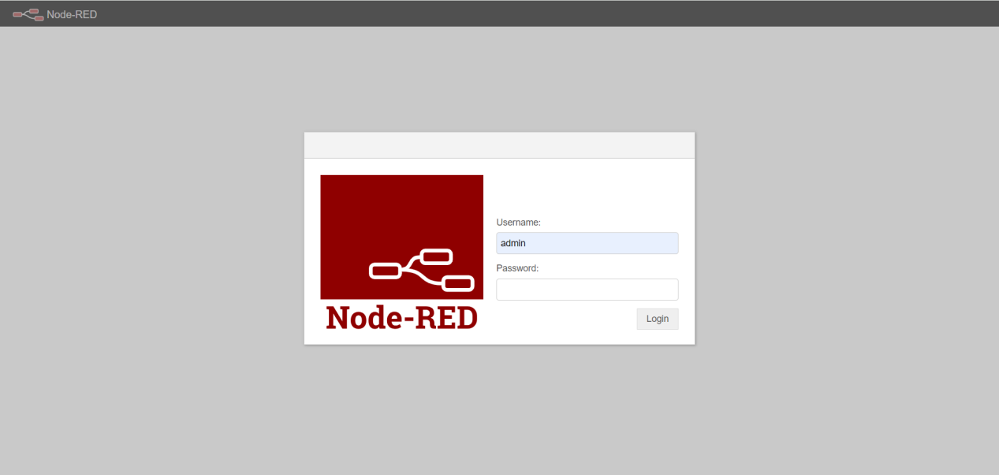
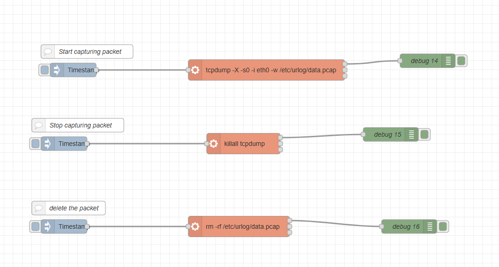
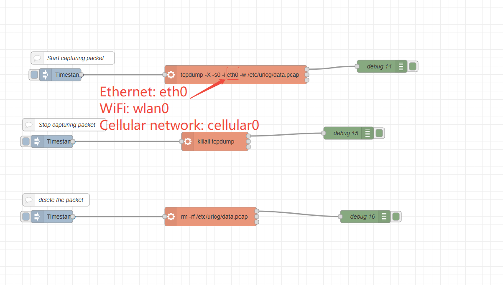
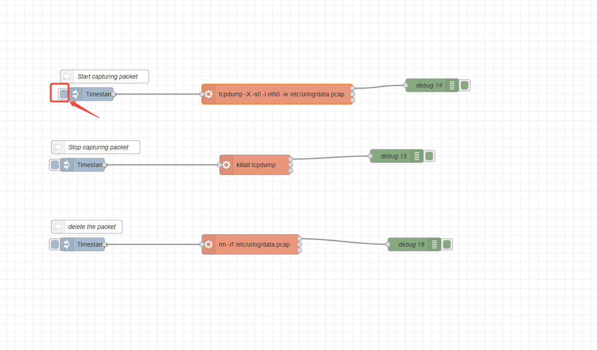
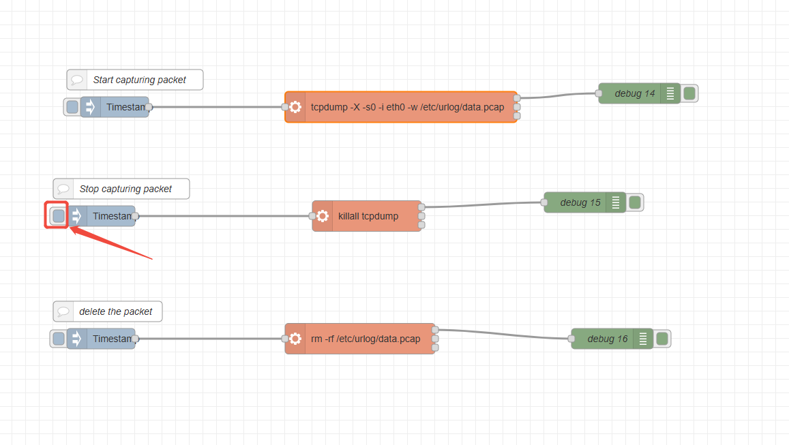
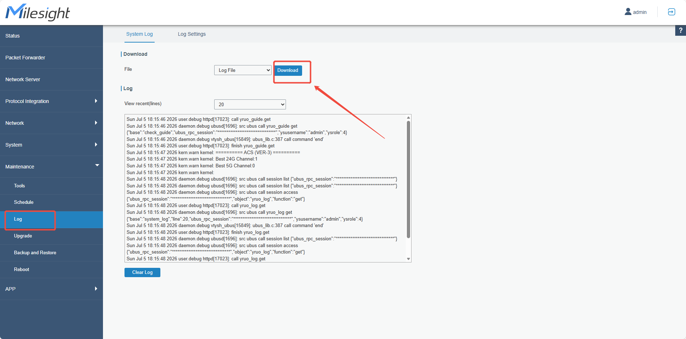
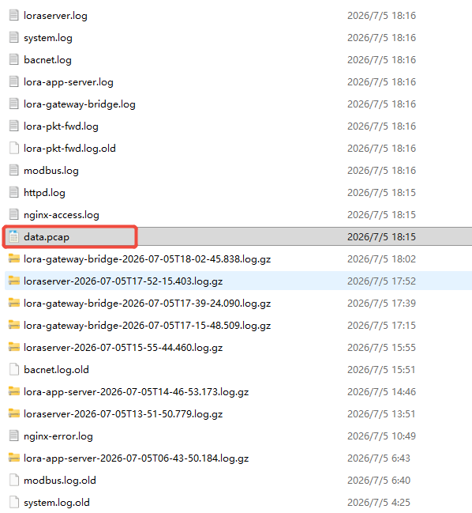
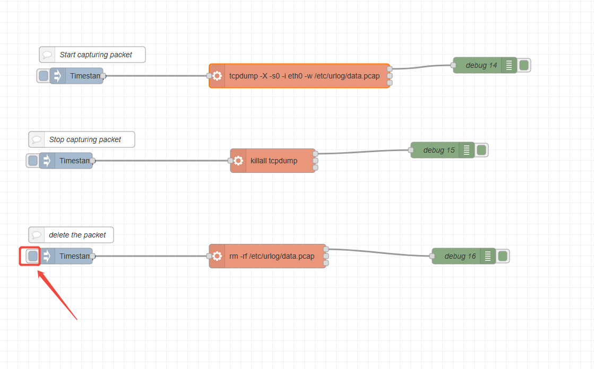

How to capture data traffic from Milesight gateway using Node-RED

How to capture data traffic from Milesight gateway using Node-RED
| Version | Update Time | Description | Author |
| 1.0 | July.5, 2026 | Initial version | Charles |
Description
In scenarios where long-term packet capture on the gateway is required for data analysis, you can utilize Node-Red on Milesight gateways to handle the task. This article provides a step-by-step guide on how to accomplish this.
Requirement
Milesight Gateway: UG56/UG65/UG67
Configuration
Step 1: Launch Node-RED and Import Flow Example
Go to App > Node-RED page to enable Node-RED program and wait for a while to load the program, click Launch button to start Node-RED web GUI.

Log in the Node-RED web GUI. The account information is the same as gateway web GUI.

Click Import to import the node-red flow example by pasting the content or import the json format file.


Step 2: Node-RED Configuration
Flow structure:

Content:
| [{"id":"16654e5175fe2b80","type":"tab","label":"流程 3","disabled":false,"info":"","env":[]},{"id":"77c20fa98173c4c2","type":"inject","z":"16654e5175fe2b80","name":"","props":[{"p":"payload"},{"p":"topic","vt":"str"}],"repeat":"","crontab":"","once":false,"onceDelay":0.1,"topic":"","payload":"","payloadType":"date","x":250,"y":240,"wires":[["81d7b7085bc94c05"]]},{"id":"81d7b7085bc94c05","type":"exec","z":"16654e5175fe2b80","command":"tcpdump -X -s0 -i eth0 -w /etc/urlog/data.pcap","addpay":"","append":"","useSpawn":"false","timer":"","winHide":false,"oldrc":false,"name":"","x":670,"y":240,"wires":[["7748d5850e58efa4"],[],[]]},{"id":"7748d5850e58efa4","type":"debug","z":"16654e5175fe2b80","name":"debug 14","active":true,"tosidebar":true,"console":false,"tostatus":false,"complete":"false","statusVal":"","statusType":"auto","x":1020,"y":220,"wires":[]},{"id":"de8cc59c0cddc58e","type":"inject","z":"16654e5175fe2b80","name":"","props":[{"p":"payload"},{"p":"topic","vt":"str"}],"repeat":"","crontab":"","once":false,"onceDelay":0.1,"topic":"","payload":"","payloadType":"date","x":230,"y":400,"wires":[["4858344cfb69e101"]]},{"id":"4858344cfb69e101","type":"exec","z":"16654e5175fe2b80","command":"killall tcpdump","addpay":"","append":"","useSpawn":"false","timer":"","winHide":false,"oldrc":false,"name":"","x":620,"y":400,"wires":[["b0bf75bd17f2fed4"],[],[]]},{"id":"b0bf75bd17f2fed4","type":"debug","z":"16654e5175fe2b80","name":"debug 15","active":true,"tosidebar":true,"console":false,"tostatus":false,"complete":"false","statusVal":"","statusType":"auto","x":940,"y":380,"wires":[]},{"id":"41916e557524e887","type":"exec","z":"16654e5175fe2b80","command":"rm -rf /etc/urlog/data.pcap","addpay":"","append":"","useSpawn":"false","timer":"","winHide":false,"oldrc":false,"name":"","x":610,"y":580,"wires":[["67cee6904a0b12af"],[],[]]},{"id":"5e608b9a0ba680a2","type":"inject","z":"16654e5175fe2b80","name":"","props":[{"p":"payload"},{"p":"topic","vt":"str"}],"repeat":"","crontab":"","once":false,"onceDelay":0.1,"topic":"","payload":"","payloadType":"date","x":230,"y":580,"wires":[["41916e557524e887"]]},{"id":"67cee6904a0b12af","type":"debug","z":"16654e5175fe2b80","name":"debug 16","active":true,"tosidebar":true,"console":false,"tostatus":false,"complete":"false","statusVal":"","statusType":"auto","x":980,"y":580,"wires":[]},{"id":"41ffb8aa3affb042","type":"comment","z":"16654e5175fe2b80","name":"Start capturing packet","info":"","x":280,"y":200,"wires":[]},{"id":"232597c602297751","type":"comment","z":"16654e5175fe2b80","name":"Stop capturing packet","info":"","x":260,"y":360,"wires":[]},{"id":"32abacc39e834a83","type":"comment","z":"16654e5175fe2b80","name":"delete the packet","info":"","x":240,"y":540,"wires":[]}] |
Step 3: Configure the flow
Double-click on the EXEC node, rReplace eth0 with the name of the network interface you want to capture; by default, eth0 is used to capture Ethernet packets.

Click Deploy to save all node-red configurations.

Step 4: Execute the flow
① click the first inject node to start capturing data packet.

② Wait a moment, you can click the second inject node to stop capturing data packet.

③ You can download the gateway logs from the log download interface on the Milesight gateway. The packet data you just captured is stored in the gateway’s log directory.


④ Because the data.pcap file you captured during the extended monitoring is stored on the gateway, it’s recommended to delete this packet file to free up disk space. Please click the third inject node to perform the deletion.

-------END-----